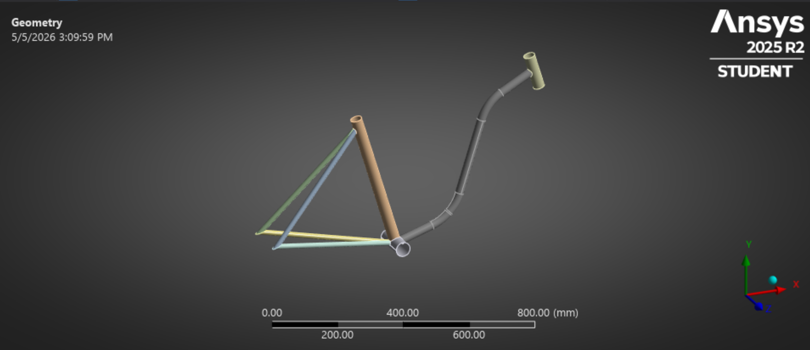

FEA and design
Bike Share Frame Redesign

This project began with a broader design question: how can a bike frame become more accessible for bike share use without losing structural credibility? I evaluated a baseline 6061 aluminum frame in Ansys, then redesigned the geometry into a step-through frame that is easier to mount.
The baseline model had a maximum deformation of 0.112 mm and a maximum equivalent stress of 42.38 MPa, producing a factor of safety of 6.12. The new geometry improved usability but increased deflection to 1.12 mm and stress to 136.29 MPa, with an initial factor of safety of 1.902.
I used parametric optimization around the bottom bracket shell to recover safety margin with a focused design change. Increasing the local tube thickness to 4 mm raised the factor of safety above 2, and a direct FEA solve verified the response surface prediction.
Technologies used: Ansys, FEA, shell modeling, mesh convergence, parametric optimization
6.12 factor of safety
The original frame stayed well below yield with only 0.112 mm maximum deformation.
Step-through frame
Removing the top tube improved accessibility but exposed higher stresses near the bottom bracket.
4 mm thickness
A targeted tube-thickness change brought the minimum factor of safety back above the design target.